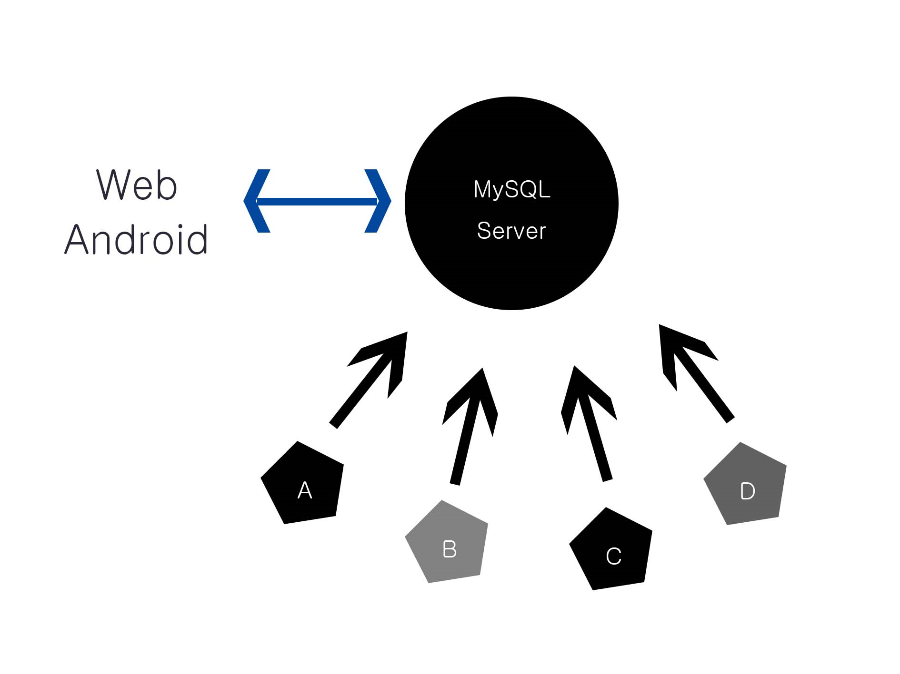

Web과 DB는 각자 다른 가치를 지닌 것이다.
서로에게 종속적이지 않음.
서로를 활용하는 것일 뿐.

Table들을 묶어 관리하는 것: 데이터베이스
SHOW [] : DB 보여주기
CREATE DATABASE [] CHARACTER SET [utf8] COLLATE [utf8_general_ci]; : DB 생성
USE []; : DB 사용
- terminal 복사,잘라내기,붙여내기.

Terminal을 이용하여 sql문을 작성하는 것은 사람이 하기엔 굉장히 불편할수도 있고 어려운 것이 현실이다. 하지만 php를 통해
프로그래밍으로 자동생성하면 훨씬 효율적이다.